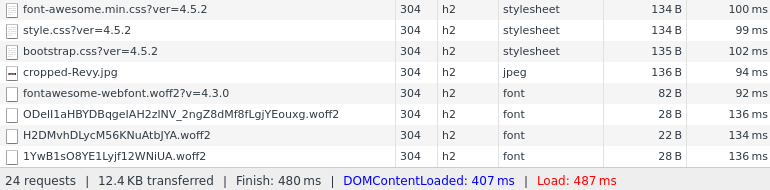
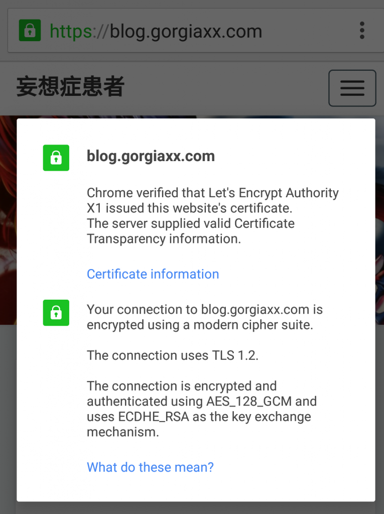

为什么要添加SSL证书/使用HTTPS协议 目前互联网常用的HTTP协议是明文传输协议，数据在网络上是透明的，可以被中间人利用。
准备 & 环境 本服务器环境DigitalOcean VPS，SG节点，Debian jessie，AMH主机面板免费SSL证书 Let’s Encrypt
NGINX OpenSSL
安装 安装&升级OpenSSL 1.0.2 要让NGINX开启HTTP/2协议，必须使用此版本的OpenSSL
Note that accepting HTTP/2 connections over TLS requires the “Application-Layer Protocol Negotiation” (ALPN) TLS extension support, which is available only since OpenSSL version 1.0.2. Using the “Next Protocol Negotiation” (NPN) TLS extension for this purpose (available since OpenSSL version 1.0.1) is not guaranteed.
去官网或者载Gayhub下载OpenSSL源码
1
2
3
wget https://github.com/openssl/openssl/archive/OpenSSL_1_0_2h.tar.gz
tar -zxvf ./OpenSSL_1_0_2h.tar.gz
cd ./openssl-OpenSSL_1_0_2h/
选择你要安装的目录，如果升级的话，把prefix参数改成OpenSSL所在的目录
1
2
3
4
5
6
7
8
./config --prefix=/usr/local /openssl --openssldir=/usr/local /ssl
make
make install
mv /usr/bin/openssl /usr/bin/openssl.OFF
mv /usr/include/openssl /usr/include/openssl.OFF
ln -s /usr/local /openssl/bin/openssl /usr/bin/openssl
ln -s /usr/local /openssl/include/openssl /usr/include/openssl
echo "/usr/local/openssl/lib" >>/etc/ld.so.conf
查看OpenSSL的版本变成了1.0.2h
安装Let’s Encrypt客户端 获取源码
1
2
git clone https://github.com/letsencrypt/letsencrypt
cd letsencrypt
安装
1
./letsencrypt-auto --help
签发证书,w参数填网站的路径,d参数填域名，证书以第一个域名为准，具体参考官方文档
1
./letsencrypt-auto certonly --webroot -w /www/blog/ -d gorgiaxx.com -d blog.gorgiaxx.com
证书有效期三个月,可以写脚本续期
1
0 0 1 * * /usr/local /nginx/sbin/nginx -s stop && /opt/letsencrypt-auto certonly --renew-by-default --webroot -w /www/blog/ -d gorgiaxx.com -d blog.gorgiaxx.com && /usr/local /nginx/sbin/nginx
证书默认生成在此目录，NGINX需要用到后两个文件
1
2
root@gorgiaxx-ubuntu:~/tmp
cert.pem chain.pem fullchain.pem privkey.pem
启用 Certificate Transparency 策略 由 Google 主导，并由 IETF 标准化为 RFC 6962。Certificate Transparency 的目标是提供一个开放的审计和监控系统，可以让任何域名所有者或者 CA 确定证书是否被错误签发或者被恶意使用，从而提高 HTTPS 网站的安全性。
CT 策略目前只有 Chrome 支持；其次 Chrome 也知道现在支持 CT 的网站并不多，所以对于没有提供 SCT 信息的 HTTPS 网站也没有太大的影响。
具体参考Certificate Transparency 那些事
1
2
3
4
5
apt-get install golang
wget -O ct-submit.zip -c https://github.com/grahamedgecombe/ct-submit/archive/v1.0.0.zip
unzip ct-submit.zip
cd ct-submit-1.0.0
go build
编译完毕，执行并提交，CT Logs服务器可以在这里找到 （被墙了）
1
2
3
4
5
6
7
8
9
./ct-submit-1.0.0 ct.googleapis.com/aviator
</etc/letsencrypt/live/gorgiaxx.com/fullchain.pem
>/etc/letsencrypt/live/gorgiaxx.com/scts/aviator.sct
./ct-submit-1.0.0 ct.googleapis.com/pilot
</etc/letsencrypt/live/gorgiaxx.com/fullchain.pem
>/etc/letsencrypt/live/gorgiaxx.com/scts/pilot.sct
./ct-submit-1.0.0 ct.googleapis.com/rocketeer
</etc/letsencrypt/live/gorgiaxx.com/fullchain.pem
>/etc/letsencrypt/live/gorgiaxx.com/scts/rocketeer.sct
安装&升级NGINX 下载并解压NGINX和nginx-ct模块
1
2
3
4
5
wget -O nginx-ct.zip https://github.com/grahamedgecombe/nginx-ct/archive/master.zip
unzip nginx-ct.zip
http://nginx.org/download/nginx-1.10.0.tar.gz
tar -zxvf nginx-1.10.0.tar.gz
/usr/local/nginx是我原先nginx的目录
添加brotli压缩格式支持，实现了更高的压缩比率，与gzip兼容
1
2
3
git clone https://github.com/google/ngx_brotli.git
cd ngx_brotli
git submodule update --init
1
2
./configure --prefix=/usr/local /nginx --user=www --group=www --with-http_ssl_module --with-http_gzip_static_module --with-http_v2_module --with-http_stub_status_module --add-module=../nginx-ct-1.3.2 --add-module=../ngx_brotli
make
如果make失败，请在configure加上
--with-openssl=/tmp/openssl-1.0.2h/
1
cp -f objs/nginx /usr/local /nginx/sbin/nginx
升级
配置NGINX 把监听端口换成443，添加ssl和http2
1
listen 443 ssl http2 default;
开启ssl和ssl_ct，添加SCT目录和SSL证书路径
1
2
3
4
5
ssl on;
ssl_ct on;
ssl_ct_static_scts /etc/letsencrypt/live/gorgiaxx.com/scts/;
ssl_certificate /etc/letsencrypt/live/gorgiaxx.com/fullchain.pem;
ssl_certificate_key /etc/letsencrypt/live/gorgiaxx.com/privkey.pem;
重载NGINX
1
/usr/local /nginx/sbin/nginx -s reload
由图可以看到，已经启用了HTTP/2协议和CT策略

可以看到CT策略开启了

———————2016年11月12日 更新：—————————
新版的letsencrypt使用certbot部署证书
1
./certbot-auto certonly --standalone --email gorgiaxx@gmail.com -d gorgiaxx.com -d www.gorgiaxx.com -d blog.gorgiaxx.com -d api.gorgiaxx.com
证书自动续期
1
0 0 1 * * /usr/local /nginx/sbin/nginx -s stop && /opt/certbot-auto renew && /usr/local /nginx/sbin/nginx
———————2017年2月9日 更新：—————————–
我说怎么老是提醒我过期(╯‵□′)╯︵┻━┻，原来certbot会在启动时自己更新，然后依赖virtualenv，VPS上没有装，所以自动续期失败